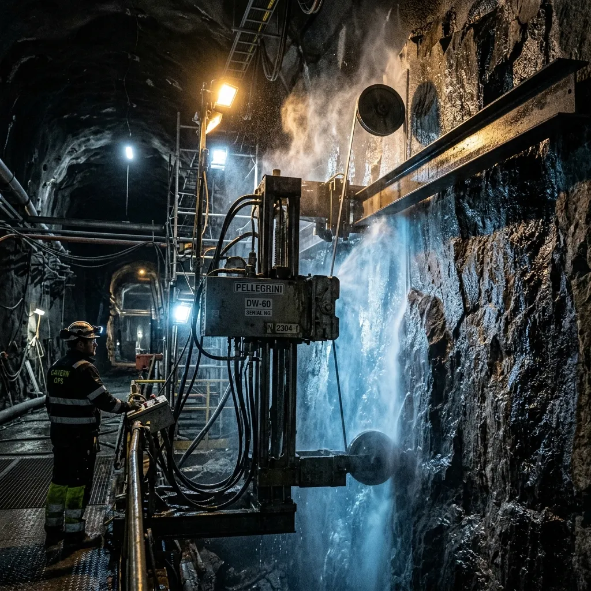
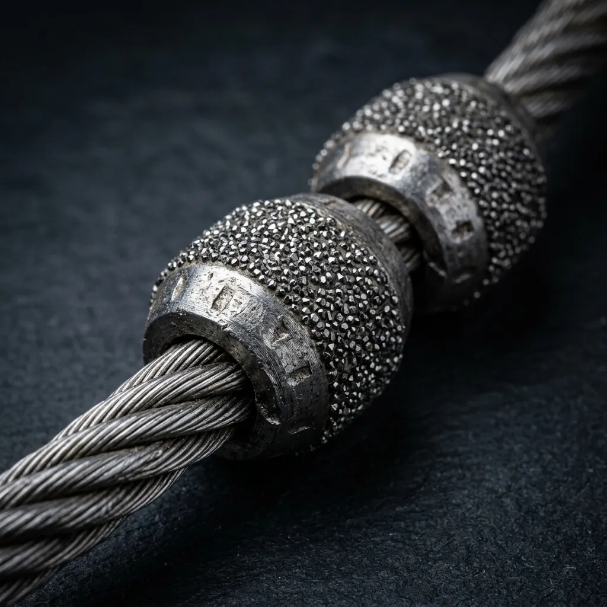
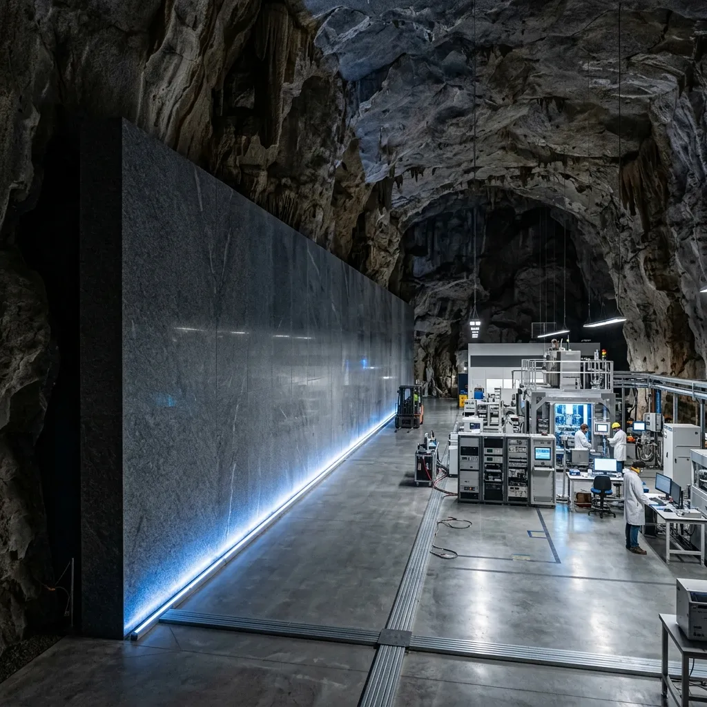

Slicing Subterranean Rock Without Disturbing a Single Quantum State.
Vibrationless diamond-wire saw cutting for deep-earth physics laboratories and high-density containment vaults.
When civil engineers construct dark-matter research chambers two thousand metres underground, standard explosive blasting is out of the question. The micro-fractures induced by dynamite destabilize the surrounding rock mass, while the seismic shockwaves permanently ruin delicate cryogenic particle detectors. Operating out of Carletonville, we deploy continuous diamond-wire sawing systems that slice through solid basalt and granite with sub-millimetre accuracy, zero dust emission, and zero impact on sensitive lab equipment.
Why Explosive Blasting Belongs in the Nineteenth Century.
Conventional mining trades treat subterranean excavation as a brute-force contest between high explosives and solid stone. In deep-crust physics installations, however, shockwaves propagate through granite strata for miles, tripping laser interferometers and disrupting liquid helium cooling loops. Even pneumatic rock breakers generate high-frequency micro-seismic noise that renders surrounding research chambers unusable for months. Our sawing methodology replaces impact with continuous rotational shear, drawing synthetic-diamond wires through solid rock at forty metres per second.
By cooling the cutting wire with a closed-loop brine slurry, we prevent thermal cracking while capturing one hundred percent of silica dust at the cut line. The resulting rock faces are as smooth as wet slate, eliminating the need for thick concrete linings that degrade deep-vault volume. Whether creating three-hundred-tonne removable basalt shielding blocks or milling smooth access shafts through active fault zones, our machinery operates with a acoustic signature so low that technicians in adjoining chambers routinely forget we are cutting through twenty metres of solid granite next door.
Technical Slicing Parameters & Environmental Limits
Absolute physical precision and zero environmental contamination in extreme-depth environments.
Vibration Attenuation
Seismic shockwaves disrupt high-precision particle detectors and laser interferometers deployed in deep geological facilities. MantleCut’s HydroWire-X9 system operates on a continuous rotational shear principle, holding peak vibrational emissions strictly below 0.02 Hz. Instead of fracturing crystalline structures through blunt impact, the diamond beads grind away the matrix at the microscopic level. Sub-surface researchers can continue sensitive data acquisition operations without pausing for excavation schedules.
Kerf Width & Material Loss
The conservation of deep-crust volume is non-negotiable. Standard industrial saws displace excessive rock, necessitating secondary filling. The HydroWire-X9 achieves an ultra-thin 3.2mm kerf width, slicing monoliths precisely and preserving intact rock cores. This sub-millimetre precision ensures structural shielding dimensions match initial CAD models exactly, eliminating the need for poured concrete backfill while ensuring absolute architectural alignment for vault doors and shielding plugs.
Hydro-Thermal Brine Recirculation
Airborne silica and microscopic rock dust pose critical contamination risks to delicate cryogenic infrastructure. We deploy a closed-loop hydro-thermal brine slurry system injected at the exact point of incision at 30 bar pressure. This not only mitigates friction-induced thermal expansion in the synthetic-diamond wire but captures one hundred percent of silica particulate at the cut line. The slurry is instantaneously extracted and pumped to our remote solid cake briquetting filtration units.
Tensile Auto-Tensioning
Confined underground vaults magnify the danger of cable snapping. Conventional rigs rely on manual tension monitoring which inevitably leads to catastrophic wire failure during dense material transitions. Our hydraulic drive units feature real-time tensile auto-tensioning modules that read resistance telemetry. The system automatically reduces or increases feed rate within milliseconds, eliminating wire snap hazards and ensuring a continuous, unbroken cut sequence even through complex quartz inclusions.
HydroWire-X9 System Specifications
Purpose-built, heavy-duty diamond sawing rigs designed for high-humidity, high-stress deep mines.

The 5-Phase Deep Cut Method
Methodical, fail-safe engineering execution from initial survey to monolith rigging.
Diamond Core-Bore Corner Drilling
The sequence initiates with laser-aligned pilot holes. 110mm diamond core-bores are drilled through the corners of the target mass, establishing the exact geometric boundary of the cut and providing the necessary channels to thread the continuous synthetic-diamond cable through solid geology.
Pulley System & Alignment Anchoring
Heavy-duty, auto-brake guide pulleys are anchored directly into the surrounding basalt. This network dictates the exact plane of the wire, ensuring tension is distributed evenly across multiple axes to prevent horizontal deviation during deep blind cuts.
Brine Slurry System Coupling
Closed-loop, high-pressure extraction collars are attached over the pilot holes. The hydro-thermal brine circuit is primed and pressurized to 30 bar, ensuring the cutting interface is continuously flushed of rock dust and temperature gradients remain flat.
Wire Threading & Automated Cut Execution
The HydroWire-X9 cable is threaded through the pilot holes, crimped, and tensioned onto the 75 kW electric hydraulic drive wheel. The remote automated control station engages, pulling the wire through the mass at forty metres per second with sub-millimetre stability.
Monolith Hydraulic Extraction
Upon completion of the final horizontal cut, heavy-lift hydraulic rams are deployed. The separated, perfectly smooth rock monolith—often weighing upwards of three hundred tonnes—is delicately pushed from its matrix and rigged for subterranean crane transport.
Field Audits from Ultra-Deep Caverns
Trusted by sovereign science councils and deep-geology repository authorities worldwide.
Mpumalanga Deep Physics Cavern (Carletonville)
Executed continuous geometric slicing of a primary detector chamber within active quartzite strata. Operational vibration maintained below 0.02 Hz threshold, resulting in zero detector downtime for the adjoining dark-matter sensor array.
Gotthard Bedrock Vault (Switzerland)
Commissioned to sever a seamless isolation wall for a hazardous waste research facility deep within the Alps. The HydroWire-X9 system produced a mirror-smooth finish across 150 square metres of dense granite, avoiding entirely the micro-cracking normally associated with pneumatic rock-breakers.
Witwatersrand Quartzite Core Extraction
Deployed specialized 3.2mm kerf wire to extract a singular 15-tonne unbroken stratigraphic core for geological testing. The auto-tensioning logic of our drive unit successfully navigated sudden quartz inclusions without fracturing the sample or snapping the wire.

Sub-Surface Operations & Safety Enquiries
Detailed responses from our Carletonville engineering crew, backed by two decades of deep underground experience.
What happens if a diamond wire breaks during a cut?
In the highly unlikely event of tensile failure, heavy-duty auto-brake guide pulleys engage instantly, stopping the 45 m/s wire in under 0.1 seconds. This fail-safe mechanism prevents whip-lash hazards, protecting personnel and delicate vault instrumentation.
How is contaminated slurry managed at 2,000m depth?
We do not rely on standard mine dewatering infrastructure. Our rigs employ a proprietary closed-loop filtration system that instantly extracts the cutting brine. The liquid is clarified and recirculated, while suspended rock dust is pressed into solid cake briquettes for easy transport to the surface.
Can rigs run on standard underground mine power?
Yes. Subterranean power grids are notoriously variable. To compensate, our 75 kW electric hydraulic drive units are equipped with built-in multi-tap transformers capable of accepting any three-phase feed ranging from 380V up to 1000V, ensuring continuous operation regardless of the facility’s specific electrical architecture.
What is the maximum thickness of rock that can be cut in a single pass?
MantleCut’s heavy-duty pulley network and robust wire tensioning logic allow for continuous blind cuts through up to 15 metres of solid basalt or quartzite in a single pass. For larger monoliths, staggered pilot hole arrays are drilled to divide the total mass into manageable removal blocks.
How are thermal expansion shifts in long diamond wires compensated?
When drawing a steel cable through abrasive rock under high friction, the wire expands. Our hydraulic drive modules utilize real-time telemetry to sense minute shifts in slack. The drive wheel continuously retreats on its track by fractions of a millimetre, holding optimal tension automatically to prevent sagging or binding.
Initiate a Deep-Vault Cutting Specification
Submit your project requirements for technical review by our Carletonville engineering staff.